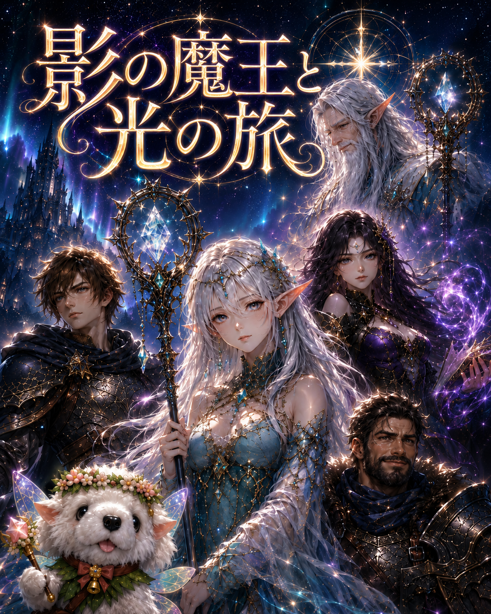

© yuwa Bloom Realm
は じ め か ら
つ づ き か ら
🌫
🔊
⏸
ここで一時停止しますか？
セーブして終了します。
次回「つづきから」を押すと
この章の最初から再開できます。
保 存 し て 終 了
つ づ け る
▼ タップして進む
— どう声をかける？ —
▼
▼ タップして次へ
あなたの名前を教えて
決定
✨
新たな仲間
仲間にする
あなたの旅のしるし
▼ タップして続ける